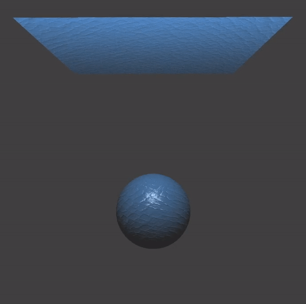
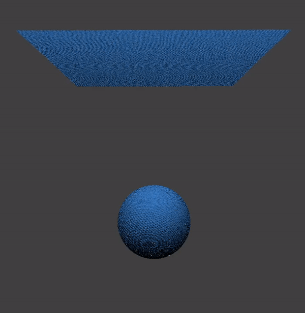
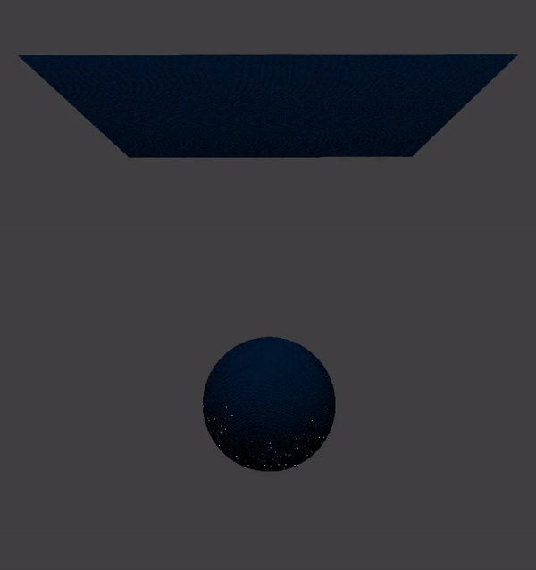

Our team faced many struggles on settling on a final project topic. Our initial proposal was forking and adding onto a NonEuclidean rendering engine. Unfortunately, it was written for Windows, and 3/4 of the team has MacBooks. We spent 2-3 days trying to configure the base code in order for it to work, but ended up deciding that the process was too time-consuming. We then changed our project idea to realistically render textiles. To do so we determined we needed a ray-tracing program and landed on Mitsuba. Unfortunately again, half the team wasn’t able to compile the program. We spent another day screen-sharing to try and figure out why it wouldn’t build.Unable to find a solution we decided to add onto an existing project. Knowing we needed a ray tracing program to implement a cloth BRDF we decided to try and use project 3-2. We went to office hours to talk to the staff about implementation and were told to trace the stack/compiler to figure out where in the code the specific BSDF functions were called. We traced the stack and it always went into assembly language. So, unfortunately we were not able to use the article to build on project 3-2 as hoped .Finally, Iman Kahssay found another article, https://google.github.io/filament/Filament.html#materialsystem/clothmodel, that described how cloth materials can be rendered using a shader program (like we did in Project 4). We then decided to build on Project 4 via implementing a new local shading model that was tailored towards lighting for cloth textures.
In addition to the technical struggles, Lucy’s computer couldn’t turn on for 2 days and Iman contracted a bacterial infection in her throat (i.e. strep throat). All 4 of us also had many other projects due and other extracurriculars around the same time.
For our final project, we chose the concept of “Cloth Rendering” (with a difficulty level of 2.0), where we will create a shading model that is fit for cloth materials, making them look more realistic (and detailed) to the human eye. In the shading program, we will implement a local shading model (which is based on perceptual observation, not physics) that focuses specifically on textiles. Similarly to Blinn-Phong model, our shader utilizes the diffusion lighting, specular lighting, and ambient lighting of an object. Additionally sheen color will be introduced in order to render two tone materials.
In our code/implementation, we included the bump mapping - we modified the normal vectors of an object - so that the fragment shader gives the illusion of detail (or texture) on the cloth. Once we added the bump mapping into our implementation, we implemented the cloth diffusion BRDF formula (𝑓𝑑(𝑣,ℎ) = 𝑐𝑑𝑖𝑓𝑓 /𝜋) given to us in our research paper. We then chose to encode the “Charlie” sheen NDF (Normal Distribution Function) into our specular lighting formula, and added the diffusion and specular components to compose the local shading model for our cloth. Next, we implemented the diffusion component, 𝑓𝑑(𝑣,ℎ) = (𝑐𝑑𝑖𝑓𝑓 / 𝜋) (1 − 𝐹(𝑣,ℎ)), given in our cloth model research paper. We noticed that using this formula, our cloth looked lighter in color. In the future, we will compare and contrast this formula with the Lambertian diffuse shading formula and see which is better for our cloth shader. So far, the implementations we made have shown great results. There is, however, one bug that we have not yet been able to correct. When the cloth is rendered, there are shimmering light pockets in areas that are supposed to be dark, at the bottom of the sphere and cloth. We suspect the bug is in the specular lighting component of our code, but have not been able to locate and fix the issue yet.
Before we implemented any code for our final project, we had the starter code from “Bump.frag” from Project 4, where it shows the texture/detail of a cloth and uses the Blinn-Phong model. As you can see, the cloth looks more plastic and unrealistic. After implementing our code, the cloth’s texture looks more pronounced and detailed. Also, the lighting implementation we used makes the cloth look more realistic (and less like plastic). We did, however, notice that there is a bug in our specular lighting, where there are shimmering light pockets in areas that are supposed to be dark, and at the bottom of the sphere and cloth. We suspect the bug is in the specular lighting component of our code, but have not been able to locate and fix the issue yet.
|

|

|
|

|
By May 5th, everything should be in order so that we are ready to show our project for the Final Presentation.
https://docs.google.com/presentation/d/1KCHW6IpdHodwBsDuWQ8HQefEQmJoVueeyesg7kTC36c/edit?usp=sharing